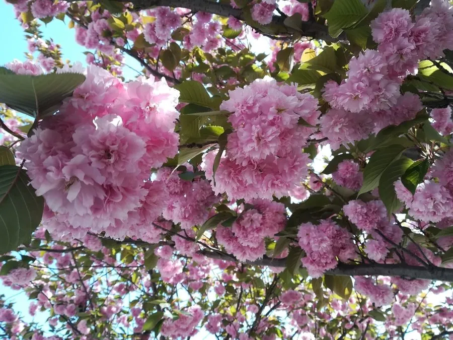

乔木 · 植物界
樱花 Prunus serrulata

春季先花后叶、花开如云的落叶乔木，是东亚春季最具代表性的观赏花木，品种繁多，赏樱习俗盛行。
- 分类
- 门被子植物门纲木兰纲目蔷薇目科蔷薇科属李属
- 栖息环境
- 海拔 500–1500 米的山坡、沟谷与林缘，喜光，喜温暖湿润
- 地理分布
- 中国长江流域、西南及华北部分山地，日本、朝鲜半岛也有分布
- 保护级别
- 暂无评估；中国未列入国家重点保护野生植物名录
物种志
樱花为落叶乔木，高可达 15 m，树皮灰褐色、平滑并具横向皮孔；叶片卵形至椭圆状卵形，边缘具尖锐重锯齿，叶柄顶端常有一对腺体。花期 3–4 月，先花后叶或花叶同放，伞形或伞房花序生于短枝，花瓣 5 枚、淡粉至白色，先端微凹，盛开时满树如云似霞；核果小、近球形，成熟时黑色。
樱花原产中国长江流域、西南及日本、朝鲜半岛，喜光、喜温暖湿润，耐寒性因品种而异，适宜疏松肥沃、排水良好的沙壤土。栽培品种已有数百个，按花期分为早樱、中樱、晚樱，其中杂交起源的“染井吉野”是东亚最常见的品种，花期短、凋落时形成“花吹雪”景观。樱花可作行道树与庭园树，花与叶可盐渍食用；赏樱习俗自唐代传入日本后发展成“花见”文化。
形态与习性
- 株高可达 15 m，树冠卵圆形
- 花期3–4 月，单朵花开约 7 天
- 果期5–6 月，核果成熟时黑色
- 光照喜光，不耐庇荫
- 水分喜湿润，忌积水
- 土壤疏松肥沃、排水良好的沙壤土，pH 6–7
- 主要用途庭园观赏、行道树、花叶盐渍食用
趣味知识
- 樱花花瓣先端有一个小缺口，这是蔷薇科樱属花朵的典型特征。
- 樱花花期很短，盛花期后花瓣成片飘落，形成被称为“花吹雪”的景观。
- 樱花树皮上有明显的横向皮孔，是辨认樱花树的重要特征。
- 中国栽培樱花的历史可追溯到秦汉时期，唐代赏樱已见于诗文。